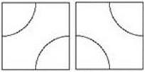
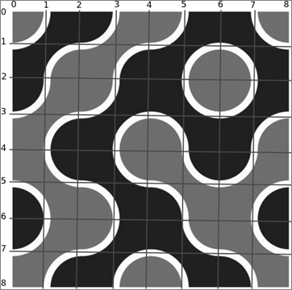

第一行两个整数n、m。
接下来n行每行m个整数，每个整数是0或者1，中间没有空格隔开。0代表此处是<图lagoon-1>中左侧那个2*2的图形，1代表此处是右侧那个图形。例如<图lagoon-2>中的第一行用“0001”表示。
第n+2行是一个整数q。
接下来q行每行两个用空格隔开的整数x、y，表示这一次倾倒污水的坐标。
忘川沧月的小水塘的水面是一片由以下两种图形组成的图案：

这两种图形都由一个边长为2的正方形和两个半径为1的1/4圆组成，圆心在正方形的两个对角顶点上。
小水塘左上角坐标为(0,0)，右下角坐标为(2*n,2*m)。水面上每一个顶点坐标为偶数的2*2正方形，都是上面两个图形中的一种。如果我们往水塘中的某个位置倒一桶污水，那么这桶污水会像画图中的油漆桶一样扩散开来，占据一片连续的区域，但是在线条边界处会停止扩散。注意如果倒在了线条上，扩散面积为0。
如下图所示，就是一个由4行4列上述图形组成的、左上角坐标(0,0)、右下角坐标(8,8)、某些位置倒了污水的水塘（白色部分为线条边界，线条实际宽度认为是0，为了明显、美观，此处加粗显示）：

现在给出一个n行m列的由上述两种图形组成的水塘，起初水塘中全部为净水。给定q个往某个坐标上(x,y)倾倒污水的操作，对于每次操作，请求出在(x,y)上倾倒的污水最终会扩散多大的面积。
第一行两个整数n、m。
接下来n行每行m个整数，每个整数是0或者1，中间没有空格隔开。0代表此处是<图lagoon-1>中左侧那个2*2的图形，1代表此处是右侧那个图形。例如<图lagoon-2>中的第一行用“0001”表示。
第n+2行是一个整数q。
接下来q行每行两个用空格隔开的整数x、y，表示这一次倾倒污水的坐标。
对于每个询问，输出此次倾倒的污水最终扩散的面积，四舍五入保留4位小数。
样例输入1
1 2
01
4
0 0
2 0
0 1
0 2
样例输入2
3 1
1
0
1
2
3 1
4 2
样例输出1
0.7854
4.8584
0.0000
4.8584
样例输出2
7.2876
1.5708
对于 100% 的数据，1<=n,m,q<=100，0<=x<=2*n，0<=y<=2*m。